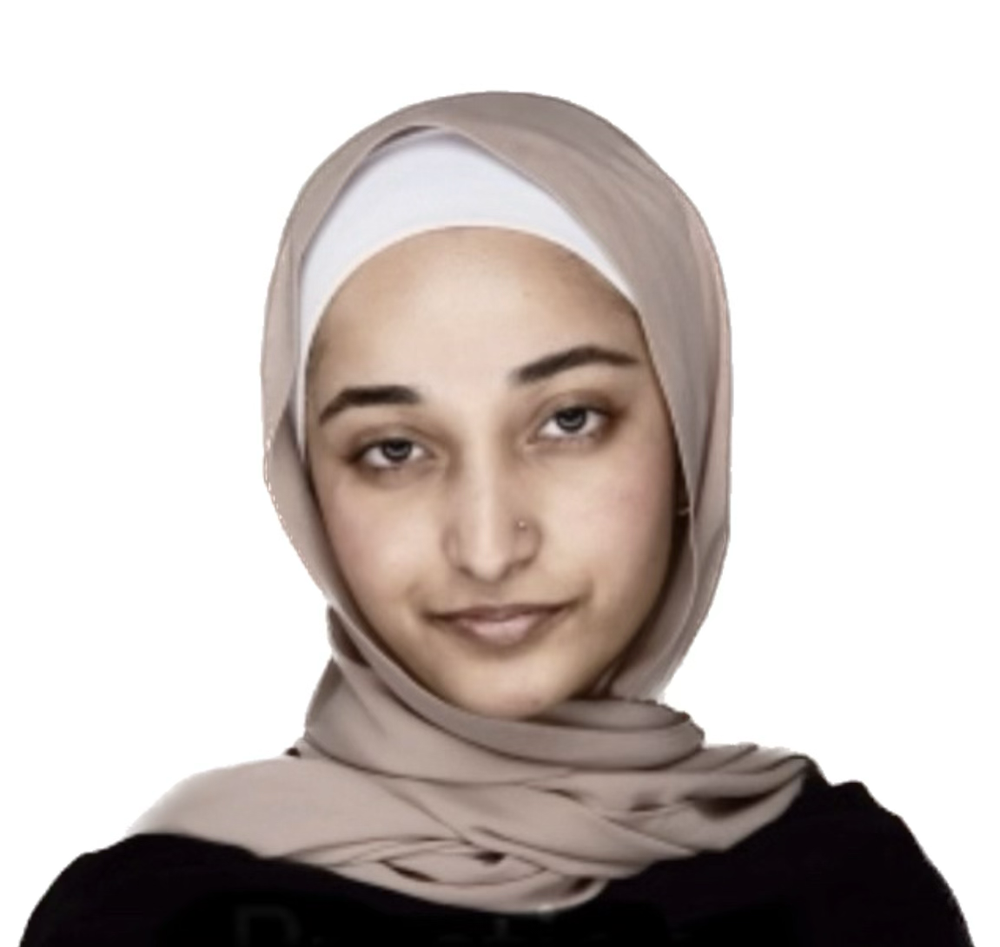
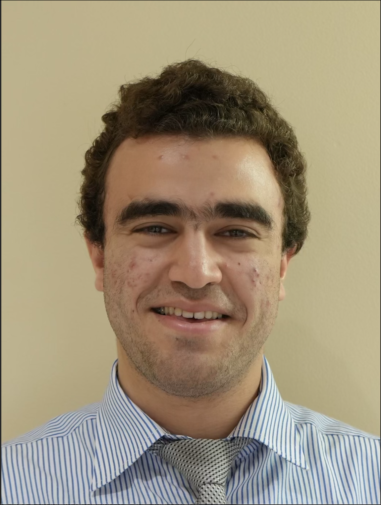
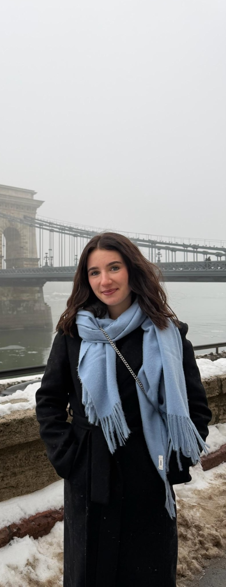

University of Maryland, Baltimore County
The UMBC Pre-Law Review is a student-run academic journal dedicated to producing rigorous, original legal scholarship at the University of Maryland, Baltimore County — giving undergraduate voices a seat at the table of legal discourse.
The UMBC Pre-Law Review was established in Fall of 2025 to provide a platform for undergraduate students to contribute to meaningful legal scholarship and to prepare them for careers in law and public service. By incorporating a wide range of topics, the journal seeks to amplify the voices of the UMBC student body, fostering thoughtful discourse and engagement with contemporary legal and policy issues.
We hold submissions to the same doctrinal and analytical standards as professional law reviews — requiring sound legal reasoning, proper Bluebook citation, and original argumentation.
Every article, essay, note, and comment in our pages is authored and edited entirely by undergraduates — reflecting the vibrant intellectual community at UMBC.
We believe legal scholarship should extend beyond the classroom. Our publications engage issues of contemporary public concern — from constitutional rights to emerging technology law.

I'm honored to serve as the Editor-in-Chief of the UMBC Law Review. I'm passionate about local politics, with plans to pursue a career as a civil rights attorney. In my free time, I love junk journaling and beachcombing!
Managing Editor of the UMBC Pre-Law Review, overseeing editorial operations and publication workflow.
I am a freshman political science major and the senior editor of UMBC's Law Review, focused on constitutional and tax law. I look to continue a career in government, aiming to become a general counsel and policy advisor.

Deeply interested in International and Humanitarian Law, with a growing focus on Economic Law and International Trade Policy. I hope to pursue a career in public service — aspiring to senior head-of-state–level leadership roles one day. In my free time, I enjoy exploring chemistry as a hobby!

This is my last semester at UMBC, and after a gap year I plan on attending law school. My background in history informs a careful, contextual approach to legal interpretation and editorial judgment.
"We believe that the most important legal voices of the next generation are already here — in the classrooms, libraries, and communities of UMBC."— Duriya Khan, Editor-in-Chief, UMBC Pre-Law Review
We recruit new staff editors each semester. Whether your interest is writing, cite-checking, or editorial leadership, there's a place for you on our board.